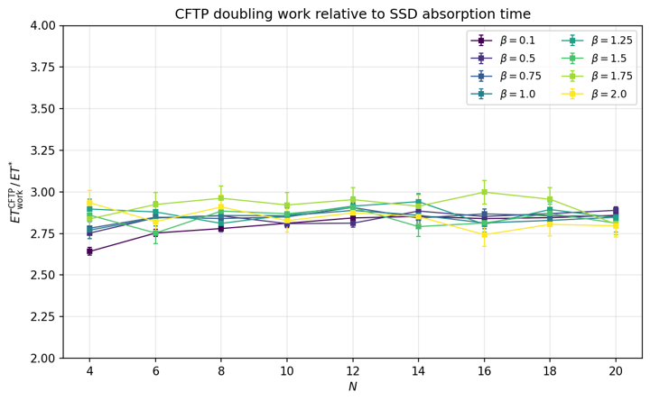
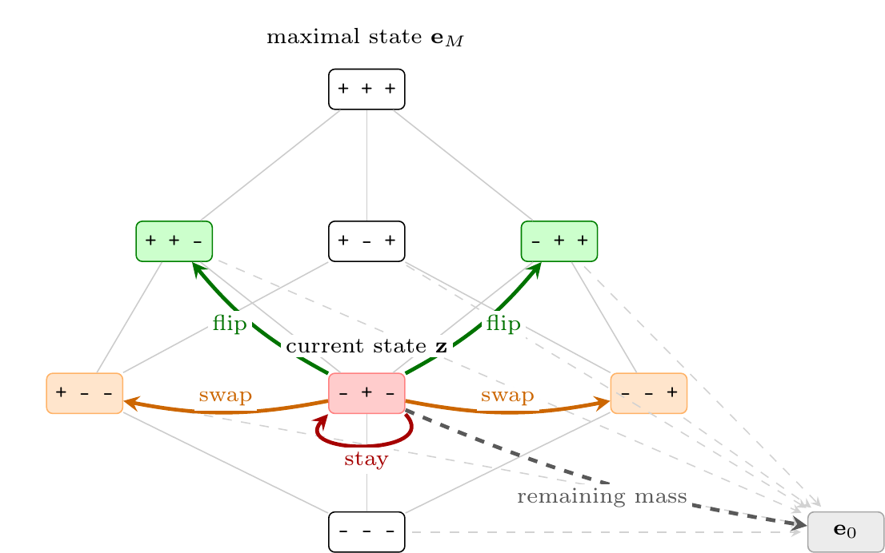

Master's thesis: perfect simulation for Möbius monotone Markov chains
The main contribution is an implementable perfect simulation algorithm: it draws exact samples from a Markov chain's stationary distribution, with no burn-in, by turning Diaconis–Fill strong stationary duality into something that can actually be run, and it is benchmarked against coupling from the past (CFTP). For chains whose time reversal is Möbius monotone, the dual is built as a Doob transform of a Siegmund dual, and the coupled process needs only the original kernel.
For the heat-bath Gibbs sampler of the Ising model on a cycle, I proved Möbius monotonicity, derived the Siegmund dual explicitly and bounded the running time by N·HN ≤ E[T*] ≤ e4β·N·HN. Monte Carlo experiments show that coupling from the past costs a constant ≈ 2.85 times more, close to the theoretical 2/ln 2.
Research on the method continues, and the work is planned for publication.

Cost of CFTP relative to the new algorithm, across N and β.

Moves of the Siegmund dual for the Ising chain on a three-vertex cycle.